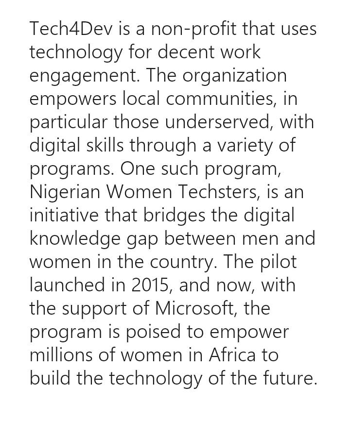
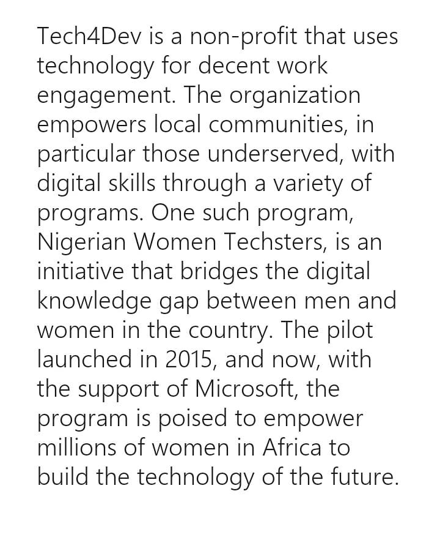

Back
Back
Microsoft Philanthropies features a story on Women Techsters
| February 29, 2020


It is one thing to do the work and another to be recognized for it: This is why we are excited about the Women Techsters story featured on the Microsoft website.
All of us at Tech4Dev are very elated to be featured on the global Microsoft blog as a success story of digital skills empowerment leading to jobs and career advancement. This further ascertains that our work in bridging the gender gap in technology is internationally recognized and viable. Our dedication to bridging the gap that exists in technology between men and women has put us on the map and we are excited to bring about positive impact in the world.
We are grateful to Microsoft for telling our story and bringing to light our passion to change the digital gender gap narrative. We are also appreciative of the opportunity to be recognized for our work in the digital space and also for the support Microsoft has given us in our journey so far. Our zeal to empower women and girls with digital and deep tech skills is strengthened. We are inspired to do more!
To read the full story: https://customers.microsoft.com/en-us/story/781356-tech4dev-nonprofit-office365-nigeria
 
